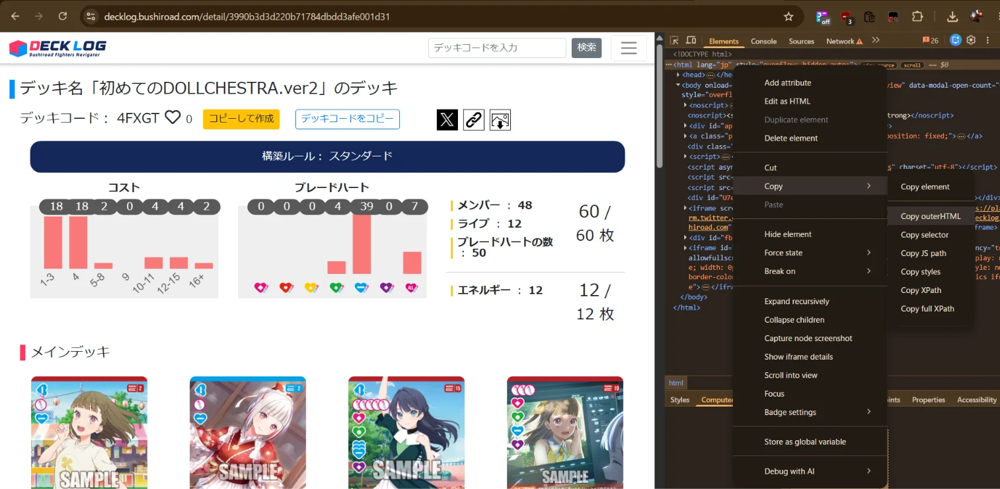

How to get a deck from Bushiroad Deck Log and paste it into the simulator
Deck Log (デッキログ) is Bushiroad's official deck management website for their TCGs, including Love Live! Series. You can browse, create, and share decks there.
Go to decklog.bushiroad.com and find a deck you want to use. Open the deck's detail page.
On the deck page, right-click anywhere on the page and select "View Page Source" or press Ctrl+U (Windows) / Cmd+U (Mac). Then press Ctrl+A to select all, Ctrl+C to copy.
Alternatively, you can copy the HTML snippet from the deck list area using your browser's DevTools (F12 → Elements tab → find the card list → right-click → Copy → Copy element).

From the game's main screen, click the "Card Browser / Deck Builder" button (bottom of the room panel). This opens the card browser in a new tab.
In the card browser, click the "Deck Creator" button at the top-right to switch from Browse mode to Deck mode.
Click the "Import" button below the deck list. A text area will appear. Paste the HTML source you copied from Deck Log into this area, then click "Import".
PL!-bp3-012-RM x 3 — Card ID, space, "x", space, quantity3 x PL!-bp3-012-RM — Quantity first, then card IDPL!-bp3-012-RM — Just the card ID (one per line, quantity defaults to 1)The imported cards will appear in the deck list on the left. You can adjust quantities, add or remove cards, and rename your deck. When finished, click "Export" to download a .txt file and copy the list to your clipboard.
Back in the game room, when setting up a match, select "Paste Deck List..." from the deck source dropdown. Paste the exported text (or the original Deck Log HTML) into the text area. The game will automatically parse it and show you the card count. Click "Set Deck" to confirm.
If you prefer a dedicated tool, open deck_converter.html for a focused converter that handles Deck Log HTML, official site exports, and plain text formats.
Make sure you copied the full HTML source (Ctrl+U → Ctrl+A → Ctrl+C), not just the visible text. The importer needs the HTML structure with <span title="..."> elements to find card IDs.
Yes! The game's setup modal also handles the official Bushiroad Love Live! website export format. Copy the deck HTML from the official site and paste it into the game setup's paste area — it will be converted automatically.
Not yet — the deck builder is for creating one deck at a time. Export your deck as a .txt file to save it, then re-import it later when you want to use it again.
In the game setup modal, both Player 1 and Player 2 have their own paste areas. You can paste a different deck for each player.
Card IDs follow the pattern PREFIX-SETCODE-NUMBER-RARITY (e.g., PL!-bp3-012-RM). The importer understands all variations including ＋, ＋, R＋, R2, P＋, P2, SEC, SECE, SECL, L, N, PR, RE, SD, PE, RM, LLE, and more.